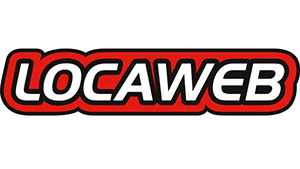

Deivid Marques
Desenvolvedor Front-end

Trabalho
Eventos
Acessibilidade
não é
Caridade!
Importância do desenvolvedor?
Criar interfaces funcionais e usáveis
Acessibilidade Web
Significa que pessoas "portadoras de necessidades especiais" sejam capazes de usar a Web.
Mais concretamente, significa uma Web projetada de modo a que estas pessoas possam perceber, entender, navegar e interagir de uma maneira efetiva com a Web, bem como criar e contribuir com conteúdos.
Quem precisa de um site/sistema acessível ??
TODOS NÓS !!!
Pra quem fazer ?
- Deficientes visuais (cegueira, daltonismo, baixa visão)
- Deficientes auditivos
- Deficientes físicos
- Usuários de todos os dispositivos
- Usuários com diferentes resoluções de tela
- Usuários com internet de baixa velocidade
Deficientes no Brasil
24%
45.623.910 pessoas
Censo 2010
Fonte: IBGE
BENEFÍCIOS
- Expansão da base de usuários
- Usuários atuais com mais interesse para acessar
Padrões para Acessibilidade
São usadas regras de padronização para acessibilidade do WCAG, atualmente na versão 2.0. O WCAG é uma recomendação W3C.
Acesse: http://www.w3.org/TR/WCAG/
ACESSIBILIDADE NÃO É SÓ CÓDIGO!!!
Quem está envolvido com acessibilidade
- Arquitetura de Informação
- Designer
- Desenvolvedores
- Redatores
- QA
Mitos
- 1) Acessibilidade Web é só para deficientes visuais.
- 2) Na prática, o número de usuários beneficiados com a acessibilidade é relativamente muito pequeno.
- 3) Fazer um site acessível demora e custa.
- 4) É melhor fazer uma página especial para os deficientes visuais.
Mitos
- 5) Um site acessível a deficientes visuais não é bonito.
- 6) Vamos por partes: primeiro fazemos o site, depois fazemos acessibilidade.
- 7) A gente sabe o que é bom para o usuário.
Lei da Acessibilidade no Brasil
Segundo o decreto 5.296 de 2004 é obrigatória a Brasil acessibilidade em sites de administração pública.
Validadores
Tipos de Leitores
- Jaws (pago)
- Voice Over (Nativo)
- NVDA (gratuito)
- Virtual Vision (gratuito)
- DosVox (pago)
- Chrome Vox (Extensão para o navegador)
Dicas
- Implementar acessibilidade no início do projeto
- Navegar pelo teclado
- Criar teclas de atalho para funcionalidades principais
- Página específica com detalhes das teclas de atalho. Twitter
- Link no topo de ir direto para conteúdo
- Testar em leitores de tela
- Testar com usuários reais
Boas práticas
- label/input
- alt em imagens
- Idioma na página
- Title na página
WAI-ARIA (Accessible Rich Internet Applications)
Define uma forma de tornar o conteúdo e aplicativos web mais acessíveis a pessoas com deficiências. Ele contribui especialmente com conteúdo dinâmico e interface de controles de usuário avançadas desenvolvidos com Ajax, HTML, JavaScript e tecnologias relacionadas.
Exemplos de
WAI-ARIA
Landmarks


Dica: focus() e show() no elemento
Mais exemplos
- aria-hidden="true" => Esconder elementos do leitor de tela
- aria-expanded="true/false" => Usado em collapses (elementos com toggle)
- aria-haspop="true" => Indique que o Link contém elementos escondidos (uma lista por exemplo)
- role="menu-item" => Indica que o link faz parte de um menu
Mais exemplos
- aria-invalid="gramar/spelling/true"
gramar: erro de gramática,
spelling: erro de ortografia
true: erro de validação - role="dialog" => Usado em modais
- aria-describedby="ID_DO_ELEMENTO"
Teste com Leitor de Tela
Formulário
OBRIGADO

@deividmarques
github.com/deividmarques